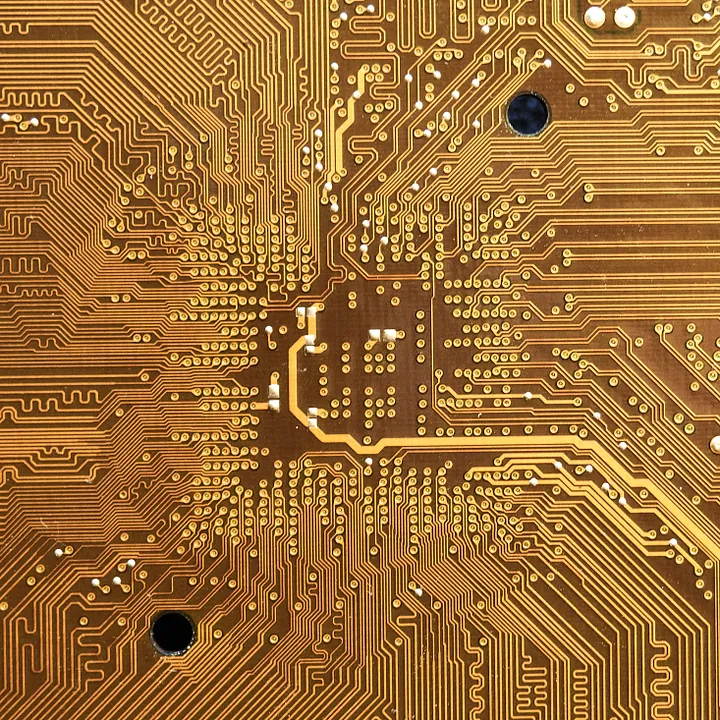

Kuantum Bilgisayarlar: Bilim Kurgudan Bilim Gerçeğe Yolculuk
Kuantum bilgisayarlar, bilgi işlem dünyasında devrim niteliğinde bir yenilik vadetmektedir. Klasik bilgisayarların sınırlarını
aşan kuantum bilgisayarlar, kuantum mekaniğinin doğrudan uygulandığı nadir alanlardan biridir.
Kuantum bilgisayar
fikrinin öncüleri olan fizikçi Richard Feynman ve matematikçi Yuri Manin, klasik bir bilgisayarda kuantum sistemlerini simüle
etmenin imkansız olduğunu ancak bir kuantum bilgisayarın klasik bir bilgisayarın yapamayacağı şeyleri simüle etme potansiyeline
sahip olduğunu öne sürmüşlerdi. Kuantum bilgisayarlar, bir zamanlar sadece bilim kurgu romanlarında yer alan bir hayal gibi görünse
de, hızla gerçekliğe dönüşüyor.
 Peki kuantum bilgisayarların klasik bilgisayarlardan farkı nedir?
Peki kuantum bilgisayarların klasik bilgisayarlardan farkı nedir?
Kuantum bilgisayarlar, klasik bilgisayarlardan temelde veri aktarma ve saklama yöntemiyle ayrışır.
1. Veri Aktarma:
Klasik bilgisayarlar işlemlerini yaparken ikili (binary) sayı sistemini kullanır. 1 ve 0 değerlerini içeren bu sayı sistemi “Bit” (Binary Digit) olarak adlandırılır. Kuantum bilgisayarlarda ise Bit kavramının yerini “Kübit” (Quantum Bit) alır. İkili sayı sisteminde değerler yalnızca 1 ya da 0 olabilirken iken Kübit sisteminde, 1 ve 0 ’lar kuantum mekaniğindeki süperpozisyon ilkesine göre aynı anda ve çeşitli kombinasyonlarda var olabilirler. Bu çeşitli kombinasyonlar sayesinde tüm olasılıkları tek seferde hesaplayan kuantum bilgisayarlarda işlemler, klasik bilgisayarlardaki gibi sıraya konmadan eşzamanlı olarak yapıldığından oldukça yüksek bir hız performansına sahiptir.
2. Veri Saklama:
Klasik bilgisayarlar verileri 1 ve 0 ’lar olarak bildiğimiz +/- yük şeklinde saklarken kuantum bilgisayarlar, 1 ve 0 değerlerine aynı anda sahip olabilmesi ve çeşitli kombinasyonları sayesinde çok daha fazla bilgiyi saklayabilir.
Kuantum bilgisayarlarla ilgili en son gelişme IBM’nin 127 kübitlik Eagle kuantum bilgisayarının süper bilgisayara karşı yapılan
testte kazanmış olması. Süper bilgisayarlar önemli miktarda veriyi çok hızlı bir şekilde işleyebilen dünyanın en hızlı bilgisayarları
olarak geçiyor. Ancak IBM tarafından yapılan bu testte Eagle, karşı karşıya geldiği geleneksel süper bilgisayarı karmaşık bir hesaplamayı
içeren karşılaştırmalı testte geçmeyi başararak kuantum bilgisayarlar için bir dönüm noktası oldu.
Kuantum bilgisayarların
yaygınlaşmasındaki en büyük engel ise oldukça hassas olmalarıdır. Kübitler ısı, elektromanyetik alanlar ve hava molekülleriyle çarpışma
gibi nedenlerle kolayca bozunmaya eğimlidir. Veri kaybının yaşanmaması için kübitlerin fiziksel ortamdan ve dış müdahalelerden korunması
gerekir.
Verilerin çok kısa bir süre (örneğin saniyenin milyonda biri) ile korunması ve sonrasında bozunmaya uğramasına kuantum
bozunumu denir. Verilerle karmaşık işlemlerin yapılıp sonlandırılabilmesi için bu bozunma süresinin mümkün olduğunca uzatılması gerekiyor.
IBM ve Yale Üniversitesi bu duruma bir çözüm geliştirmiş. Geliştirdikleri bu çözümde kübitler -273,15 dereceye yani mutlak sıfır
noktasına yaklaştırılarak süper iletkenlik durumuna geçiriliyor. Mutlak sıfır noktası, yaşamın yani tüm moleküler hareketlerin durduğu
nokta olduğundan kübitler burada enerjiye sahip olmadığı için dış etkenlerden de neredeyse hiç etkilenmiyor ve veriler 2–4 kat daha uzun
bir süreyle saklanabiliyor, bu da gerekli işlemlerin sonlanması için gereken zamanı sağlıyor.
Kuantum bilgisayarların karmaşık işlemleri kısa sürede yapması siber güvenlik alanında yaşanabilecek sorunları da akla getiriyor.
Şifrelemede rastgele sayılar üretme hızı olumlu bir yön olsa da bu hız, şifreleri kırmak isteyecek korsanlara da cazip geliyor.
Kuantum bilgisayarların yaygınlaşması ve kişisel kullanıma sunulması söz konusu olursa özellikle banka sektörünün bu konuda önlem
alması gerekecek. Bu önlemlere “kuantum geçirmez” adını verdikleri algoritmalar örnek verilebilir. Fakat güvenlik şirketi FireEye’dan
risk analisti Parnian Najafi’ye göre bu durum olası değil. Najafi durumu şu sözlerle açıklıyor: “Mevcut kuantum bilgisayarlarda düzenli
ve stabil çalışabilme ortamı olabilmesi için sıfır derece sıcaklığa ihtiyaç duyuluyor. Böylece ortamdaki diğer radyo dalgalarından ve
gürültüden uzak kalabiliyorlar. Bu çalışma ortamındaki gerekli koşulları sağlamak da kişisel kullanım için çok zor olacak.”
Kuantum bilgisayarların son derece hassas yapıya sahip olmaları, özel tasarım gerektirmeleri, programlanmalarının karışık ve zor olması
gibi nedenlerden dolayı ilk aşamada sadece klasik ve süper bilgisayarların yetersiz kaldığı durumlarda kullanılmak üzere geliştirileceği
öngörülüyor.
Kuantum bilgisayarın gelecekte yaygınlaşması için alması gereken epey yol var. Klasik mekanik kuralları yerine bilim
insanlarının hala tam fikir sahibi olmadığı kuantum mekaniğinin kullanılması dolayısıyla öncelikle kuantum mekaniğinin iyi anlaşılması,
sonrasında bu mekanikle uyumlu mikroişlemcilerin, algoritmaların, programlama dillerinin geliştirilmesi gerekiyor. Şu anda laboratuvar
ortamları için geliştirilmiş kuantum bilgisayarların geleceği için bu alanda çalışan mühendislerin ve bilim insanlarının öngörüsüne göre
ilk prototip 15–20 yıl içinde üretime geçecek.
Umarım faydası dokunan ve keyifle okuduğunuz bir yazı olmuştur. Başka yazılarımda görüşmek dileğiyle👋🏻